-
高速铁路接触网巡检图像智能识别技术
近年来，随着我国高速铁路迅速发展，为了提高运营效率，其运行维护、检修、故障探测将从传统"开天窗"模式...
— 更多 — -
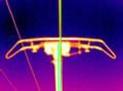
基于红外图像的接触网拉出值测量技术
为掌握接触网供电中弓和网的状态，采用标定的红外设备进行拉出值精确测量，解决...
— 更多 — -
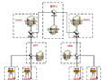
高速公路H.264视频监控联网技术协议制定、测试
目前各省高速公路网发展迅速，交通监管任务日趋繁重。而视频监控技术作为一种十分有效的监管手段在高速...
— 更多 — -
智能监控视频内容分析与搜索
引入视频内容分析与搜索技术，可以在海量分布式视频信息库中，根据文本语义、视频/图片等信息...
— 更多 — -
购物搜索
在线购物已经成为一种方便、快捷、廉价的购物方式，甚至成为青年人的一种时尚，随之而来的是数据...
— 更多 — -
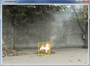
基于视频的烟火检测系统
火灾是最常见的严重灾害之一，是一种在时空上失去控制的燃烧所引发的灾害，时刻都在对社会经济、自然生态和人身财产的安全构成着严重威胁...
— 更多 — -
H.264视频传输差错恢复技术
运动补偿预测和变换编码压缩技术尽管非常成功，但其对抗差错能力十分脆弱。传输中...
— 更多 — -
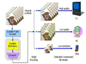
SVC视频传输差错恢复技术
网络视频应用的日益增长：电话会议，视频点播(VoD)，远程教育，流媒体及数字图书馆...
— 更多 — -
AVS-M帧内更新和关键帧选择技术
AVS-M编码标准同 H.264/AVC、MPEG等一样都是采用基于运动估计和补偿的时域预测技术...
— 更多 — -
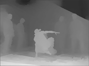
立体/多视点视频技术研究
立体视频一般由两个视点组成，它是根据人眼的双目视差原理，在播放时通过显示从略微不同的角度采集到的同一场景的两个视图...
— 更多 — -
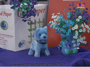
基于视觉感知的立体视频编码技术研究PVC
充分结合视觉感知原理实现基于视觉感知的视频编码方案，在相同的主观质量条件下，有效降低视频图像的编码资源...
— 更多 — -
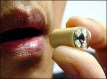
胶囊内窥镜图像处理与识别
胶囊内镜形如胶囊，病人吞服下经过8小时左右可得到6-8万张病人消化道内图像。如何有效地筛选出可能是病变的图像供医生进一步确诊具有很重要的意义...
— 更多 — -
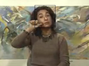
H．264码率控制技术研究
码率控制技术随之成为视频编码的关键技术之一。由于H.264的编码算法与以往的视频编码标准有些不同，因此它的码率控制相对复杂一些...
— 更多 — -
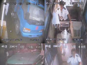
公路收费站车辆及收费信息远程监控平台
如何确保各级公路收费站公平、公正收费，有效防止逃票、漏票、司机收费员协同作弊等违法犯罪行为是国家收费管理部门的一项重要方针和政策...
— 更多 — -
复杂环境下的汽车车牌识别技术
车牌识别的关键技术：车牌图像预处理——滤波、变形/倾斜校正；车牌定位——精确得到...
— 更多 — -
基于视频的交通信息提取技术
ITS（智能交通）传统检测技术主要包括：雷达装置,微波检测装置,管道（Tube）检测装置；磁感应环路...
— 更多 — -
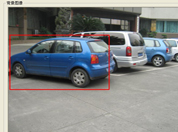
车辆特征匹配系统
图像匹配是计算机视觉和数字图像处理的重要组成部分,广泛应用于摄影测量与遥感、资源分析、三维重建、目标识别等众多领域...
— 更多 — -
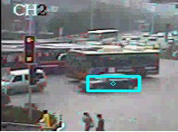
基于视频的车辆跟踪系统
在车辆跟踪系统中，相邻帧中对象区域或对象特征的图像结构具有很大的相关性，可以利用这些相关性来解决连续帧中的对象匹配问题...
— 更多 — -
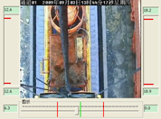
基于视频的集装箱辅助定位系统
铁路敞车装运集装箱偏载一直是铁路运输安全的一个重要问题，主要由两个环节造成：一是在装车过程中；二是在运输途中...
— 更多 — -
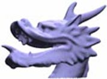
点模型的表面降噪和三维重建算法研究
将双边滤波器和三边滤波器的思想推广应用到点模型的降噪上，并且将曲率信息和噪声之间的相互关...
— 更多 — -
高速道岔工务参数监测系统
我们针对国内到道岔监测的现状，研究了工务参数检测的方法和手段，研制了高速道岔工务参数的监测系统...
— 更多 — -
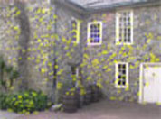
基于未标定视频图像的全自动三维重建
三维重建是人类视觉的主要目的，也是计算机视觉的最主要的研究方向，它用物体的图像恢...
— 更多 — -
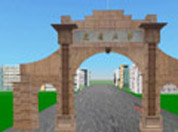
虚拟场景建立与漫游
根据列车运行仿真平台产生的列车速度、位置，信号机颜色等信息，将机车视景在多个视景...
— 更多 — -
人脸特征定位技术
人脸特征定位是人脸识别的一个核心环节，在MPEG-4视频编码、视频安全监控等领域应用广泛...
— 更多 — -
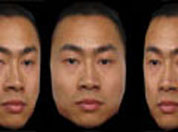
3D人脸自动重建
近年来，随着三维感知技术和三维几何学学科了解的逐步深入，人们进行人脸识别也开始受三维...
— 更多 — -
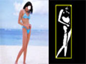
敏感图像识别
我们对计算机识别敏感图像技术进行了研究分析，综合研究分析了皮肤的肤色模型、皮肤的纹理...
— 更多 — -
血管环境下的良性肿瘤生长模拟
肿瘤切除手术或肿瘤放射治疗之前对肿瘤引起的周围血管神经位移和形变的评估和预测非常...
— 更多 — -
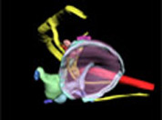
人耳听觉器官建模
结合数字图像处理与图形学技术，在二维图像中自动分离出可能存在病变的组织区域，进行三...
— 更多 — -
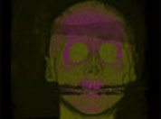
基于可编程图形硬件的体绘制技术研究
运用并行加速技术，实现大数据量实时渲染与交互、基于物理建模与仿真等复杂自然现...
— 更多 — -
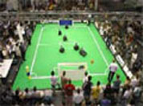
机器人足球赛视觉系统
FIRA：强调集中控制方式，全体队员受同一个大脑的控制； RoboCup：强调分布式控制...
— 更多 —
-
视频编码
所谓视频编码方式就是指通过特定的压缩技术，将某个视频格式的文件转换成另一种视频格式文件。
多媒体搜索
多媒体搜索能够使用多种数据类型的查询，包括文本等多媒体格式的信息
研究项目
实验室主要在视频压缩与传输技术,立体视频编码技术研究 ，新闻视频搜索，基于内容的网络图像/视频搜索，视频/图像处理，网络媒体挖掘，云计算，立体头肩视频序列的抗差错优化编码和差错掩盖研究，基于视频的交通信息提取技术，铁路交通信息检测和实时处理，医学图像处理,数据挖掘，智能搜索等方面开展了研究工作.
—更多 —


{kind=link}
{kind=link}